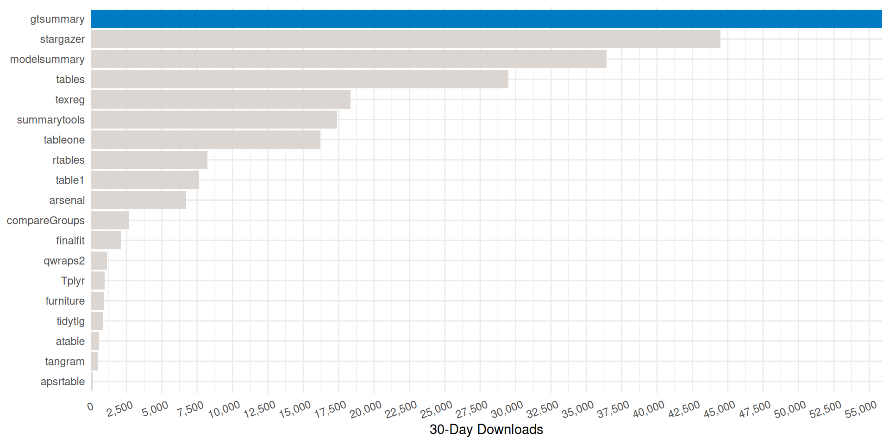
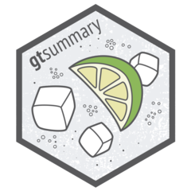
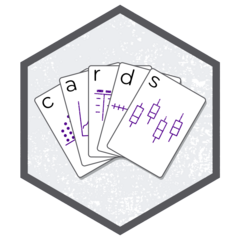
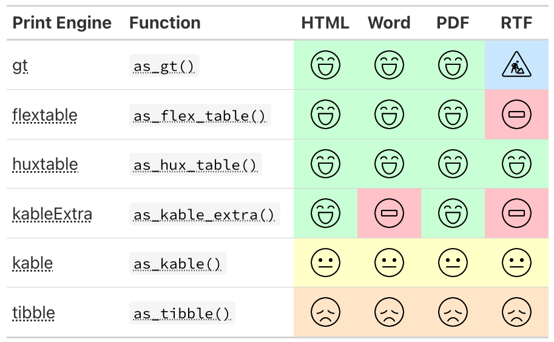

An Introduction to {gtsummary}
Daniel D. Sjoberg
Duke BERD Seminar Series

Introduction
Acknowledgements
This work is licensed under a Creative Commons Attribution-ShareAlike 4.0 International License (CC BY-SA4.0).
Your speaker
Questions
Please ask questions at any time!
What we will cover
{gtsummary} fundamentals —
tbl_summary(), hierarchical tables, merging and stacking.Analysis Results Data — every number in a table is saved, machine-readable, and extractable.
Print engines — {gt}, {flextable}, and Word output.
Themes — set your defaults once, for every table.
Coding agents — writing your standards down so an agent follows them.
About you
We are assuming you:
Are comfortable in R and have seen the tidyverse — the native pipe, {dplyr}.
No prior {gtsummary} experience is needed.
This is an introduction to {gtsummary}: what it does, how to customize it, and where to go next.
{gtsummary} fundamentals
How it started
Began to address reproducibility issues while working in academia
Goal to build a package to summarize study results with code that was both simple and customizable
How it’s going
The stats
- 2,400,000+ installations from CRAN
- 1,200 GitHub stars
- 1,500 citations in peer-reviewed articles
- 50 code contributors
Won the 2025 Brian Bole Award of Excellence from R in Pharma
Won the 2021 American Statistical Association (ASA) Innovation in Programming Award
Won the 2024 Posit Pharma Table Contest
30-day CRAN Downloads
{gtsummary} overview
Create tabular summaries with sensible defaults but highly customizable.
Today we will focus on the following summary types as well as themes and print engines.
tbl_summary()tbl_hierarchical()
Other helpful functions we’re not covering:
tbl_cross(): cross tabulationstbl_wide_summary(): similar totbl_summary()but statistics are presented in separate columnsregression models, survival data, survey data, and many more!
Basic tbl_summary()
Four types of summaries:
continuous,continuous2,categorical, anddichotomousStatistics are
median (IQR)for continuous,n (%)for categorical/dichotomousVariables coded
0/1,TRUE/FALSE,Yes/Notreated as dichotomous by defaultLabel attributes are printed automatically
Customize tbl_summary() output
| Characteristic | Placebo N = 861 |
Xanomeline N = 1681 |
|---|---|---|
| Age, years | ||
| Mean (SD) | 75 (8.6) | 75 (8.1) |
| Min, Max | 52, 89 | 51, 88 |
| Ethnicity | ||
| HISPANIC OR LATINO | 3 (3.5%) | 9 (5.4%) |
| NOT HISPANIC OR LATINO | 83 (97%) | 159 (95%) |
| Female | 53 / 86 (62%) | 90 / 168 (54%) |
| 1 n (%); n / N (%) | ||
by: specify a column variable for cross-tabulationtype: specify the summary typestatistic: customize the reported statistics
label: change or customize variable labelsdigits: specify the number of decimal places for rounding
{gtsummary} + formulas
This syntax is also used in {cards}, {cardx}, and {gt}.

Named list are OK too! label = list(age = "Patient Age")
{gtsummary} selectors
Use the following helpers to select groups of variables:
all_continuous(),all_categorical()Use
all_stat_cols()to select the summary statistic columns
Add-on functions in {gtsummary}
tbl_summary() objects can also be updated using related functions.
add_*()add additional column of statistics or information, e.g. p-values, q-values, overall statistics, treatment differences, N obs., and moremodify_*()modify table headers, spanning headers, footnotes, and more
Update tbl_summary() with add_*()
| Characteristic | Placebo N = 861 |
Xanomeline N = 1681 |
Overall N = 2541 |
|---|---|---|---|
| Age | 76 (69, 82) | 77 (71, 81) | 77 (70, 81) |
| Ethnicity | |||
| HISPANIC OR LATINO | 3 (3.5%) | 9 (5.4%) | 12 (4.7%) |
| NOT HISPANIC OR LATINO | 83 (97%) | 159 (95%) | 242 (95%) |
| Female | 53 (62%) | 90 (54%) | 143 (56%) |
| 1 Median (Q1, Q3); n (%) | |||
add_overall(): adds a column of overall statistics
Update tbl_summary() with add_*()
| Characteristic | N | Placebo N = 961 |
Xanomeline N = 1771 |
p-value2 |
|---|---|---|---|---|
| Tumor Size, mm | 25 | 78 (38, 96) | 67 (26, 92) | 0.659 |
| Progression | 273 | 6 (6.3%) | 9 (5.1%) | 0.687 |
| 1 Median (Q1, Q3); n (%) | ||||
| 2 Wilcoxon rank sum exact test; Pearson’s Chi-squared test | ||||
add_n(): adds a column non-missing countsadd_p(): adds a column of p-values
add_stat(): add any statistic you like, placed on the label or the level rows, in a single column or manyAnd many more!
Update tbl_summary() with add_*()
| Characteristic | Drug A N = 981 |
Drug B N = 1021 |
Difference2 | 95% CI2 | p-value2 |
|---|---|---|---|---|---|
| Tumor Response | 28 (29%) | 33 (34%) | -4.2% | -18%, 9.9% | 0.6 |
| Patient Died | 52 (53%) | 60 (59%) | -5.8% | -21%, 9.0% | 0.5 |
| 1 n (%) | |||||
| 2 2-sample test for equality of proportions with continuity correction | |||||
| Abbreviation: CI = Confidence Interval | |||||
add_difference(): adds the difference between two groups (rate differences here, mean differences for continuous variables) with a 95% CI and p-valueThe difference calculation can be adjusted, e.g. for age and stage:
add_difference(test = ~ "emmeans", adj.vars = c(age, stage))
Update tbl_summary() with modify_*()
tbl <-
adsl |>
tbl_summary(by = ARM2, include = c("AGE", "ETHNIC", "FEMALE")) |>
modify_header(
stat_1 ~ "**Group A**",
stat_2 ~ "**Group B**"
) |>
modify_spanning_header(
all_stat_cols() ~ "**Drug**") |>
modify_footnote_header(
footnote = paste("median (IQR) for continuous;",
"n (%) for categorical"),
columns = all_stat_cols()
)
tbl| Characteristic |
Drug
|
|
|---|---|---|
| Group A1 | Group B1 | |
| Age | 76 (69, 82) | 77 (71, 81) |
| Ethnicity | ||
| HISPANIC OR LATINO | 3 (3.5%) | 9 (5.4%) |
| NOT HISPANIC OR LATINO | 83 (97%) | 159 (95%) |
| Female | 53 (62%) | 90 (54%) |
| 1 median (IQR) for continuous; n (%) for categorical | ||
Use show_header_names() to see the header names available to modify_header():
Column Name Header level* N* n* p*
label "**Characteristic**" 254 <int>
stat_1 "**Group A**" Placebo <chr> 254 <int> 86 <int> 0.339 <dbl>
stat_2 "**Group B**" Xanomeline <chr> 254 <int> 168 <int> 0.661 <dbl> * These values may be dynamically placed into headers (and other locations).
ℹ Review the `modify_header()` (`?gtsummary::modify_header()`) help for examples.Adverse Event Reporting (and friends)
Use tbl_hierarchical() and tbl_hierarchical_count() for reporting of AEs, Con Meds, and more.
| Primary System Organ Class Dictionary-Derived Term |
Placebo N = 861 |
Xanomeline N = 1681 |
|---|---|---|
| CARDIAC DISORDERS | 4 (4.7%) | 8 (4.8%) |
| ATRIAL FLUTTER | 0 (0%) | 2 (1.2%) |
| MYOCARDIAL INFARCTION | 4 (4.7%) | 6 (3.6%) |
| EYE DISORDERS | 1 (1.2%) | 0 (0%) |
| EYE ALLERGY | 1 (1.2%) | 0 (0%) |
| EYE SWELLING | 1 (1.2%) | 0 (0%) |
| 1 n (%) | ||
The same add_*() and modify_*() verbs work here too, e.g. add_overall(last = TRUE) and add_difference() for risk differences between arms.
Sort and filter the hierarchy
| Primary System Organ Class Dictionary-Derived Term |
Placebo N = 861 |
Xanomeline N = 1681 |
|---|---|---|
| CARDIAC DISORDERS | 4 (4.7%) | 8 (4.8%) |
| MYOCARDIAL INFARCTION | 4 (4.7%) | 6 (3.6%) |
| 1 n (%) | ||
sort_hierarchical(): orders rows by descending event frequency (default). Usesort = everything() ~ "alphanumeric"to sort alphabetically insteadfilter_hierarchical(): keeps AEs meeting an occurrence threshold. The filter is an expression on the underlying counts, e.g.sum(n) >= 5,n_overall > 20, orp_overall > 0.05
tbl_merge() for side-by-side tables
tbl_n <-
tbl_summary(adsl, include = ETHNIC, statistic = ETHNIC ~ "{n}") |>
modify_header(all_stat_cols() ~ "**N**") |> # update column header
remove_footnote_header() # remove footnote
tbl_age <-
tbl_continuous(adsl, include = ETHNIC, variable = AGE, by = ARM2) |>
modify_header(all_stat_cols() ~ "**{level}**") # update header
# combine the tables side by side
list(tbl_n, tbl_age) |>
tbl_merge(tab_spanner = FALSE) # suppress default header| Characteristic | N | Placebo1 | Xanomeline1 |
|---|---|---|---|
| Ethnicity | |||
| HISPANIC OR LATINO | 12 | 64 (63, 86) | 63 (56, 78) |
| NOT HISPANIC OR LATINO | 242 | 76 (70, 82) | 77 (71, 81) |
| 1 Age: Median (Q1, Q3) | |||
tbl_stack() to combine vertically
tbl_drug_a <- filter(adsl, ARM2 == "Placebo") |>
tbl_summary(include = ETHNIC)
tbl_drug_b <- filter(adsl, ARM2 == "Xanomeline") |>
tbl_summary(include = ETHNIC)
# stack the two tables
list(tbl_drug_a, tbl_drug_b) |>
tbl_stack(group_header = c("Placebo", "Xanomeline"), quiet = TRUE) |> # optionally include headers for each table
modify_header(all_stat_cols() ~ "**Summary Statistics**")| Characteristic | Summary Statistics1 |
|---|---|
| Placebo | |
| Ethnicity | |
| HISPANIC OR LATINO | 3 (3.5%) |
| NOT HISPANIC OR LATINO | 83 (97%) |
| Xanomeline | |
| Ethnicity | |
| HISPANIC OR LATINO | 9 (5.4%) |
| NOT HISPANIC OR LATINO | 159 (95%) |
| 1 n (%) | |
Analysis Results Data
Every number is saved
Every calculation in {gtsummary} is stored as an Analysis Results Dataset (ARD)
An ARD is a long, machine-readable data frame: one row per statistic

…and can be extracted
gather_ard() returns the ARDs behind every number in the table.
# An ARD data frame: 6 × 12
group1 group1_level variable variable_level context stat_name stat_label stat fmt_fun warning error gts_column
<chr> <list> <chr> <list> <chr> <chr> <chr> <list> <list> <list> <list> <chr>
1 ARM2 Placebo AGE <NULL> summary median Median 76 <fn> <NULL> <NULL> stat_1
2 ARM2 Placebo AGE <NULL> summary p25 Q1 69 <fn> <NULL> <NULL> stat_1
3 ARM2 Placebo AGE <NULL> summary p75 Q3 82 <fn> <NULL> <NULL> stat_1
4 ARM2 Xanomeline AGE <NULL> summary median Median 77 <fn> <NULL> <NULL> stat_2
5 ARM2 Xanomeline AGE <NULL> summary p25 Q1 71 <fn> <NULL> <NULL> stat_2
6 ARM2 Xanomeline AGE <NULL> summary p75 Q3 81 <fn> <NULL> <NULL> stat_2 …or start from an ARD
The tbl_ard_*() functions build a table directly from an ARD.
| Characteristic | Placebo1 | Xanomeline1 |
|---|---|---|
| Age | 76.0 (69.0, 82.0) | 77.0 (71.0, 81.0) |
| Female | 53 (61.6%) | 90 (53.6%) |
| 1 Median (Q1, Q3); n (%) | ||
Print engines
Print engines

Themes
Themes
A theme is set once, before you build any tables, and every table in the session picks it up.
theme_gtsummary_journal("jama")— defaults matching a journal’s guidelinestheme_gtsummary_compact()— smaller font and cell paddingtheme_gtsummary_language("es")— translate every tabletheme_gtsummary_printer(print_engine = "flextable")— change the print engine
Themes stack: call several, and each one layers onto the last. You can also write your own to capture your group’s standards.
Before and after
Package defaults
| Characteristic | Placebo N = 861 |
Xanomeline N = 1681 |
p-value2 |
|---|---|---|---|
| Age | 76 (69, 82) | 77 (71, 81) | 0.8 |
| Ethnicity | 0.8 | ||
| HISPANIC OR LATINO | 3 (3.5%) | 9 (5.4%) | |
| NOT HISPANIC OR LATINO | 83 (97%) | 159 (95%) | |
| 1 Median (Q1, Q3); n (%) | |||
| 2 Wilcoxon rank sum test; Fisher’s exact test | |||
After JAMA + compact themes
| Characteristic | Placebo N = 86 |
Xanomeline N = 168 |
p-value1 |
|---|---|---|---|
| Age, Median (IQR) | 76 (69 – 82) | 77 (71 – 81) | 0.82 |
| Ethnicity, n (%) | 0.76 | ||
| HISPANIC OR LATINO | 3 (3.5) | 9 (5.4) | |
| NOT HISPANIC OR LATINO | 83 (97) | 159 (95) | |
| 1 Wilcoxon rank sum test; Fisher’s exact test | |||
Coding agents
From chat LLM to coding partner
A coding agent (e.g. Claude Code) lives inside your project: it reads your files, runs R, and iterates — and it follows instructions you commit to the repo.
The goal: a coding partner that adheres to your domain standards without constant reminders.
AGENTS.md and SKILL.md
Two ways to write your standards down for a coding agent. Both are committed to the repo, so every agent on the project reads the same thing.
AGENTS.md— how we work in this repo, every time. House code style, where the data comes from, project layout, how to build. Lives at the root; the agent loads it for every task.SKILL.md— how to do one particular task, loaded only when that task comes up. Itsdescriptionis the trigger the agent matches against, so it is written as concrete situations, not a summary.
The golden path
Give the agent an explicit priority order for building a table:
Set the theme — your group’s theme, right after loading packages.
Use {gtsummary} functions —
tbl_summary(),tbl_hierarchical(), …ARD-first for complex/custom — build ARDs with {cards}/{cardx}, render with
gtsummary::tbl_ard_*().Last resort — build the ARD yourself, then
gtsummary::as_gtsummary().
A gtsummary Skill
The golden path above, encoded. Lives at .agents/skills/gtsummary-tables/SKILL.md, with reference files (worked examples) bundled beside it.
---
name: gtsummary-tables
description: Build clinical summary tables in R with crane, gtsummary,
and cards. Use whenever the user asks for a summary / demographics /
AE / lab table or a "Table 1".
---
# Clinical summary tables
Setup: load tidyverse, crane, gtsummary, cards; then
crane::theme_gtsummary_roche().
## Decision order
1. {crane} wrapper (tbl_roche_summary(), tbl_baseline_chg()) if one fits
2. else {gtsummary} tbl_*() (tbl_summary(), tbl_hierarchical())
3. complex/custom -> ARD-first: cards::ard_stack() / cardx::ard_*()
-> tbl_ard_*()
4. last resort -> build the ARD, then as_gtsummary()
Never use gtsummary::tbl_custom_summary(): it is not ARD-based.
Always gather_ard() the result for QC.In Closing
Three ideas to take home
Consistent verbs, every table
One consistent set of tbl_*() verbs — from a demographics table to nested adverse event tables.
ARD-backed means trust
Every number is saved as an ARD — traceable and extractable via gather_ard().
Encode it, then scale it
A shared theme captures your house standards; a coding agent applies them without reminders.
Where to go next
Docs & cheat sheet — danieldsjoberg.com/gtsummary
The full function reference, and a detailed tbl_summary() vignette
Enterprise {gtsummary} — the full R/Pharma 2026 workshop
More detail on everything in this talk, from the workshop much of this deck is adapted from
Table gallery — worked examples of common tables
Ask on stackoverflow.com — use the gtsummary tag. Just kidding — nobody uses Stack Overflow anymore; ask an AI.
Thank you
2,400,000+ installations — go build something cute.